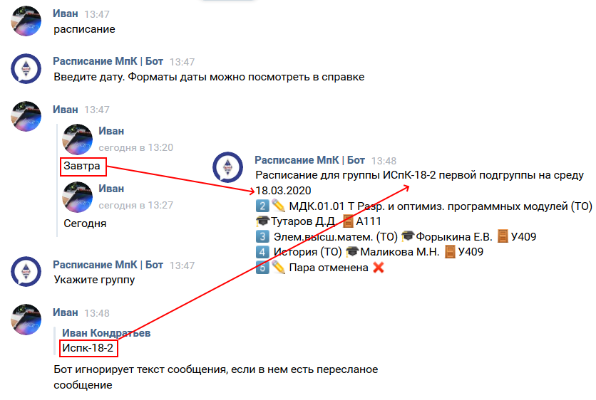

Как пользоваться ботом? #
На данный момент боту можно написать в VK.
Обработка команд #
Бот может воспринимать команды в двух режимах:
- Режим диалога.
Вы пишите просто команду без аргументов (например: расписание) или нажимаете нужную вам кнопку, Затем отвечаете на вопросы бота. После отправки ответа, бот проверяет его и если нет ошибок переходит к следующему вопросу. После ответа на все вопросы выводится результат.
Чтобы выйти из диалога, необходимо написать отмена
Пример:
Вы: Расписание
Бот: Введите дату
Вы: Завтра
Бот: Укажите группу
Вы: 12-1
Бот: ❌Группа указана неверно.
Вы: Испк-18-2
Бот: Укажите подгруппу
Вы: Первая
Бот: Расписание для группы ИСпК-18-2 первой подгруппы...
- Всё в одной строке.
Вы пишите команду и её аргументы через пробел в одном сообщении и если в них нет ошибок, то выводится результат.
Пример:
Вы: Расписание завтра испк-18-2 1
Бот: Расписание для группы ИСпК-18-2 первой подгруппы...
Вы: Расписание завтра испк 1
Бот: ❌Группа указана неверно
Оба способа работают для всех команд
Аргумент даты #
Для указания конкретного дня можно использовать следующие форматы:
-
Позавчера,Вчера,сегодня,завтра,послезавтра ДД.ММ, например01.03ДД.ММ.ГГ, например01.0!2.20ДД.ММ.ГГГГ, например01.02.2020-
Понедельник,Вторник, …Суббота Пн,Вт, …Сб
Чтобы вывести данные за все доступные дни можно воспользоваться словом
все или all
Условные обозначения #
В выдаваемом расписании присутствуют некоторые символы emoji. Их значения:
- - Номер пары
- ✏ - Пара из замен
- ❓ - Во время обработи замены произошла ошибка. В ответ просто скопировано содержимое ячейки файла замен
- 🎓- ФИО прподавателя
- 🚪 - Номер кабинета
Сокращения и синонимы комманд #
Почти каждую команду можно написать сокращенно или на английском языке.
Например расписание можно сократить до
расп или использовать его синоним - timetable.
Пересланые сообшения #
Если переслать сообщение, то бот будет обрабатывать текст из пересылаемого сообщения. Если переслать несколько сообщений, то бот примет текст только из первого сообщения 